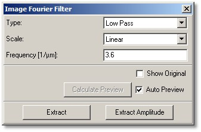
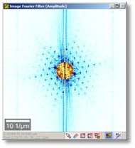
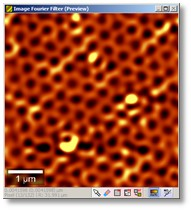

|
描述
图像傅里叶滤波对话框将图像变换到傅里叶空间（显示振幅图像），并允许更改掩模以截断某些频率进行反变换。
输入与结果
输入：
一个图像数据对象。
结果：
傅里叶振幅图像或反变换图像。
用户界面

类型（组合框）：
根据此选项，您可以更改振幅图像中的掩模，以截断傅里叶空间中的频率进行反变换：自由手绘（允许使用绘制工具直接在图像查看器中更改掩模）、低通（使用频率参数去除高频）、低通行（逐行去除高频，仅垂直掩模）、高通（使用频率参数去除低频）、高通行（逐行去除低频，仅垂直掩模）、去除谐波（去除给定频率的谐波）。
比例（组合框）：
更改振幅图像的比例：线性（线性比例）、对数（对数比例）、平方根（平方根比例）。
频率（浮点编辑框）：
定义低通（行）、高通（行）和去除谐波掩模创建的频率。
显示原始（复选框）：
如果勾选，预览图像查看器显示原始图像而不是反变换预览（用于比较）。
计算预览（按钮），自动预览（复选框）：
参见自动预览。
提取（按钮）：
计算并将反变换图像提取到当前项目。
提取振幅（按钮）
将振幅图像提取到当前项目。
预览窗口

第一个预览图像查看器显示傅里叶振幅图像。此查看器可用于定义掩模以截断反变换的频率。根据类型参数（组合框），此掩模会自动创建。

第二个预览图像查看器显示使用第一个预览图像查看器中掩模截断频率后的反变换图像。